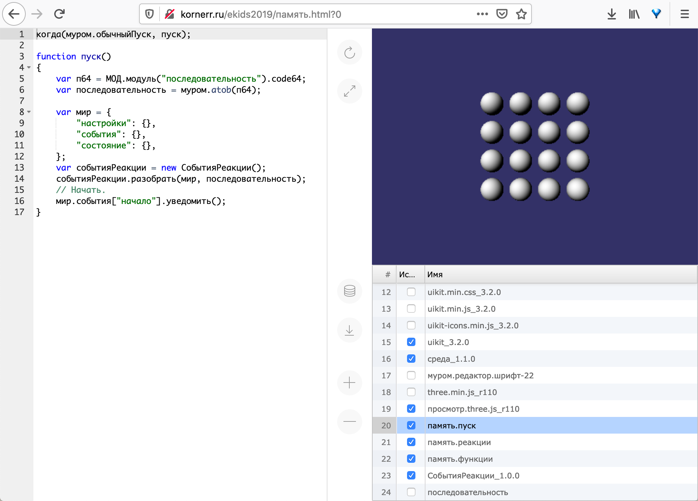
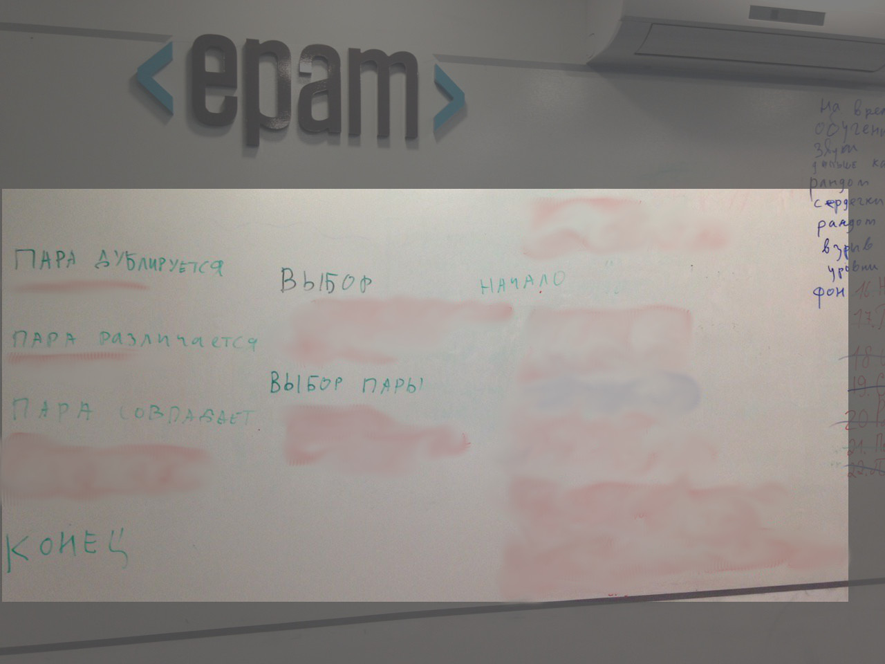
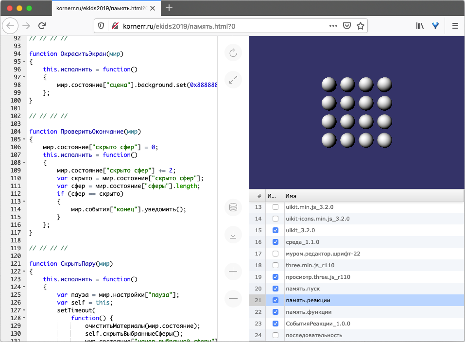
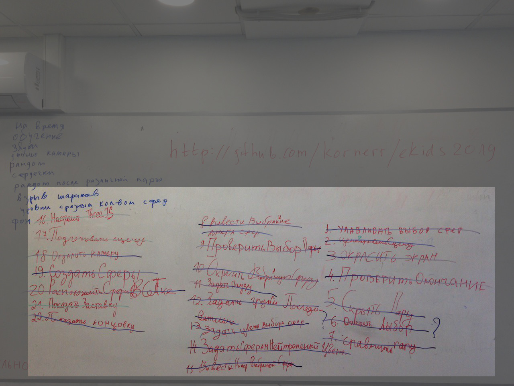
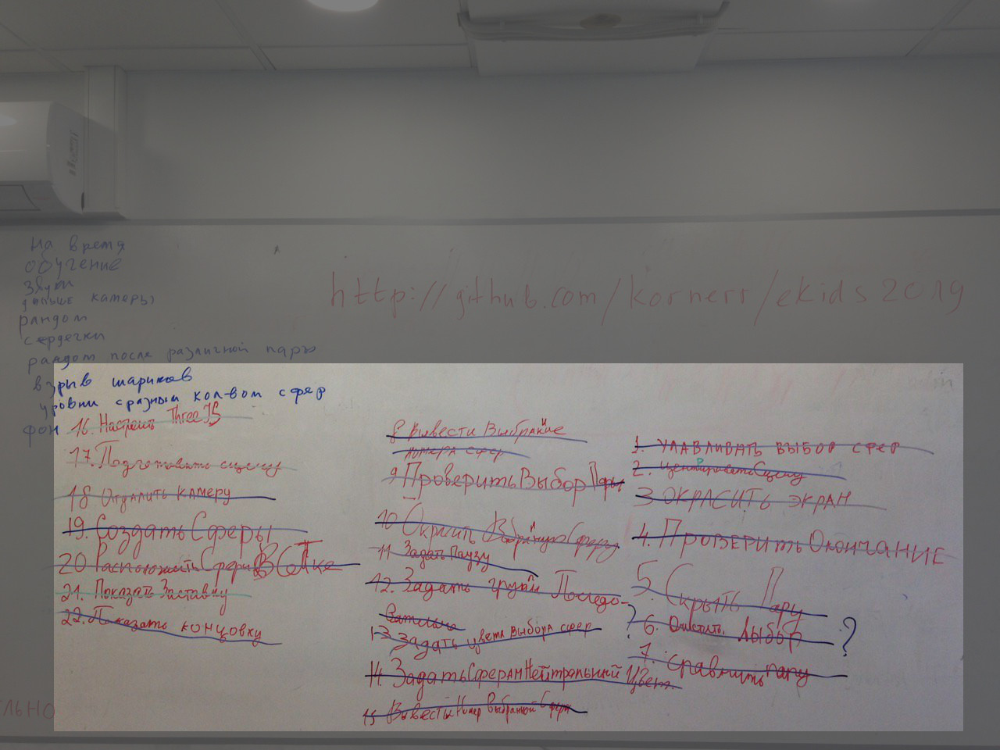
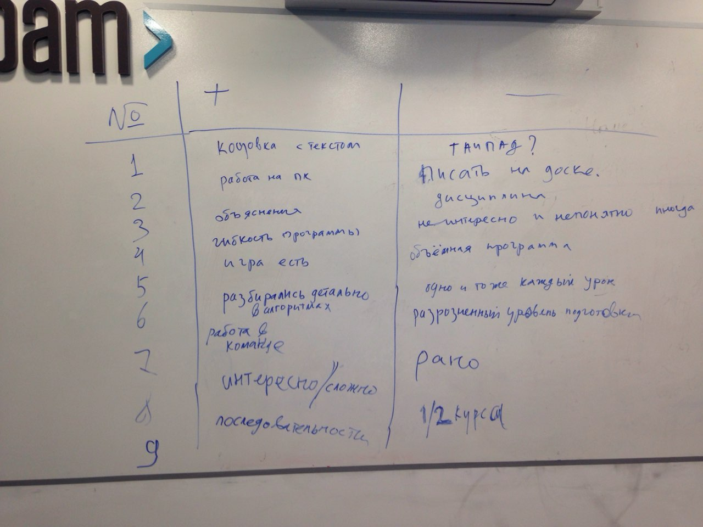

2020-02-12 00:00

В этой статье Михаил расскажет об обучении ребят программированию в 2019-м году.
Предисловие
Осенью 2019-го я в третий раз участвовал в курсе обучения ребят 10-15 лет программированию в качестве одного из преподавателей. Наши курсы проходили с середины сентября по середину декабря. Каждое занятие было в субботу с 10:00 до 12:00. Подробнее о структуре каждого урока и деталях создаваемой на курсе игры можно узнать из статьи за 2018-й год.
Лично для себя я выделил две основные цели, к которым иду с помощью курсов:
Игра

Простейшей игрой уже второй раз является игра на память, суть которой в поиске совпадающих элементов на игровом поле. Детально механика игры разобрана в статье за 2018-й год. Поиграть в созданную на курсе игру вы можете прямо из браузера по этой ссылке.
Инструмент

Основным критерием при создании инструмента для меня являлась неприхотливость, выражающаяся в следующем:
Инструмент представляет из себя интегрированную среду разработки (ИСР), технически являющуюся одним файлом HTML. В этом единственном файле находится как ИСР, так и создаваемый результат (в данном случае игра на память). Инструмент в целом выглядит довольно стандартно:
Ввиду того, что у нас лишь один файл, нам нужно уметь запускать его в двух режимах:
?0 в адресной строкеВременное хранение изменений осуществляется с помощью хранилища браузера (IndexedDB). Для сохранения изменений на постоянной основе, например, для публикации, необходимо скачать этот же самый файл с изменениями, нажав на соответствующую кнопку в средней панели.
Первые занятия
Для первого занятия я подготовил 80 строк кода на JavaScript, распечатал их и раздал каждому. Каждый ученик должен был набрать распечатанный код в инструменте. Набором кода я преследовал две цели:
Скорость набора оказалась чрезвычайно низкой: от примерно 14 символов в минуту (ученик успел набрать лишь половину) до примерно 39 символов в минуту. Сам я этот код набирал со скоростью 213 символов в минуту, поэтому от результатов учеников опешил: у меня появилось подозрение, что написать необходимые 300 строк игры за 1 час мы к концу курса не осилим физически.
На втором занятии мы в набранном ранее коде искали опечатки. Я встретил такие опечатки, которые ни у себя, ни у других коллег в жизни не находил. Тут я опешил второй раз: ученикам было чрезвычайно сложно найти опечатки, даже имея перед глазами распечатанный код. Страшно представить, что случилось бы с их психикой, если бы мы проходили жесточайший тест по дизайну интерфейсов с вопросами вроде такого:

С третьего по шестое занятия я уменьшал код вплоть до 10 строк, выдавал инструмент уже с частично набранным кодом, в котором нужно было найти и исправить ошибки. Ничего не помогало: ученики просто не воспринимали написанное, как-будто вместо чего-то членораздельного на экране видели иероглифы.
Успешное седьмое занятие
Прошло уже больше половины курса, а я не продвинулся ни на йоту. В очередной попытке найти хоть какой-то способ объяснить код игры я ещё раз переписал игру. На этот раз с модулем под интригующим названием последовательность.
К моему удивлению, на занятии был оглушительный успех: мы успели до "звонка", и ребята буквально горели энтузиазмом. Горели настолько, что устроили под конец занятия мозговой штурм о том, чего бы ещё добавить в появившуюся в ходе занятия игру:

Итак, давайте разберём это занятие подробнее.
Доска
Предыдущие занятия у нас строились в формате "преподаватели подходят к каждому ученику и помогают ему индивидуально". За шесть занятий мы - два преподавателя - осознали, что подход к каждому и погружение в частные опечатки/ошибки занимает времени больше, чем объяснение нового материала.
С седьмого занятия мы решили завязать всех учеников на доску, т.е. доска становилась центральным местом, где все мы творили, куда выходили и где писали. Компьютеры же превращались в место, куда ученики копируют содержимое доски. Практика показала, что доски в школах существуют не зря:
Важно отметить, что на доске преподаватели работают совместно с учениками: преподаватель задаёт направление, но ученики сами выходят и пишут на ней ответы на вопросы, заданные преподавателем. Плюсы такого подхода следующие:
Последовательность
Модуль последовательность для игры на память выглядит следующим образом:

Последовательность позволяет записать алгоритм в виде событий и реакций:
начало, выбор и т.д.) расположены без отступа слева;настроить ThreeJS, показать заставку) расположены под соответствующими событиями с отступом.Таким образом, при запуске игры (событие начало) мы настраиваем ThreeJS (реакция настроить ThreeJS), показываем заставку (реакция показать заставку) и т.д.
Занятие мы начинали с практически пустым модулем последовательность, присутствовали заранее лишь события без реакций:

Эти же события я выписал на доске, оставив свободное место для записи реакций (замазано уже в GIMP для удобства иллюстрации):

Реакции мы искали в модуле память.реакции:

Каждая реакция модуля последовательность представлена в модуле память.реакции функцией-конструктором. Например, реакции проверить окончание однозначно соответствует функция ПроверитьОкончание:
function ПроверитьОкончание(мир) // 1.
{
мир.состояние["скрыто сфер"] = 0; // 2.
this.исполнить = function() // 3.
{
мир.состояние["скрыто сфер"] += 2; // 4.
var скрыто = мир.состояние["скрыто сфер"]; // 5.
var сфер = мир.состояние["сферы"].length; // 6.
if (сфер == скрыто) // 7.
{
мир.события["конец"].уведомить(); // 8.
}
};
}
Рассмотрим эту функцию подробнее:
мир (словарь), используемый для общения функций друг с другом. мир состоит из трёх областей (ключей словаря):состояние содержит переменные значения для обмена данными;настройки содержат константные значения для настройки функций;события содержат издателей для организации возможности подписать функции на события.new при разборе модуля последовательность. Фактически всё, что не входит в метод исполнить, является телом конструктора. В частности, здесь мы создаём переменную скрыто сфер для учёта количества скрытых сфер.исполнить вызывается на каждое уведомление о событии.проверить окончание вызывают на событие сокрытия пары сфер, то счётчик скрыто сфер увеличиваем на 2.скрыто сфер.конец.Поиск функций в модуле память.реакции ученики осуществляли по очереди:
// // // //);Это упражнение тоже позволяет проследить, кто внимательно следит за поиском и записью функции, а кто не может, когда подходит его очередь, найти свою функцию.
После выписывания названий всех функций на доску мы сопоставляли события с реакциями (функциями) схожим образом:
началоПосле получения более-менее рабочего набора реакций для одного события можно предложить ученикам перенести реакции с доски в компьютеры. Таким образом мы заполняем реакции как на доске:
 

так и в инструменте:
Следующие занятия
На следующих занятиях мы пытались создать новую реакцию и соответствующую ей функцию-конструктор. Сначала я пытался опять наскоками (целыми строками кода) вбить решение в головы, однако, существенных результатов это не дало. Поэтому пришлось разбирать в течение нескольких занятий примерно такой код:
var кот = "9";
console.log(кот);
К сожалению, донести смысл этих двух строк кода так и не удалось: ребята путались в том, что такое переменная, а что такое значение. На этом проблемы не закончились: в новой функции нужно было работать с массивом, что оказалось просто невозможно объяснить. Мне ещё предстоит научиться объяснять переменные и массивы в ходе следующих курсов.
К концу занятий мы, конечно, функцию написали, но понимания и последующей веры в себя, выраженной в горящем энтузиазме, как это было на седьмом занятии, уже не было.
Последнее занятие
На последнем занятии вместо стандартного круга приветствия я попросил каждого (включая себя) высказаться, что понравилось в курсе (+), а что стоит изменить (-). Получилась следующая таблица:

Как ни странно, ребятам не нравилось писать на доске, несмотря на то, что она увеличивала эффективность изложения материала. С одной стороны, была "объёмная программа", а с другой - "одно и то же каждый урок", т.е. повторение пройденного ранее материала.
Раз в несколько занятий мы сохраняли результат на GitHub. Давалось это тоже нелегко: мы тратили до получаса на то, чтобы каждый вошёл в свою учётную запись. Как всегда, никто не помнил свой пароль (причём каждый раз) либо для подтверждения захода с нового устройства требовался доступ к почте, пароль от которой либо тоже никто не помнил, либо почта была родительская (ребята звонили родителям).
Так или иначе, у каждого ученика к концу курса осталась собственная версия игры с персональными заставкой и концовкой:

Выводы
С одной стороны, были явные успехи:
С другой стороны, были явные неудачи:
Поэтому в ходе курса обучения программированию 2020-го года я попробую ответить на следующие вопросы:
Ответы на эти и другие вопросы будут через год ;)